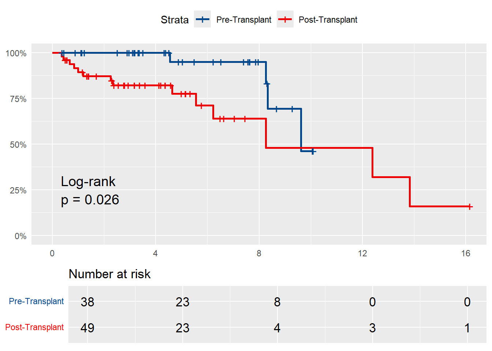

| Characteristic | Overall N = 1081 |
Pre Transplant N = 541 |
Post Transplant N = 541 |
p-value2 |
|---|---|---|---|---|
| Gender | 0.048 | |||
| Female | 25 (23%) | 14 (26%) | 11 (20%) | |
| Male | 58 (54%) | 23 (43%) | 35 (65%) | |
| Unknown/Unspecified | 25 (23%) | 17 (31%) | 8 (15%) | |
| Age at transplant, y | 54 (12) | 58 (11) | 49 (11) | <0.001 |
| Age at RCC, y | 56 (10) | 55 (11) | 57 (10) | 0.9 |
| Donor status | 0.8 | |||
| Deceased | 75 (69%) | 37 (69%) | 38 (70%) | |
| Living | 33 (31%) | 17 (31%) | 16 (30%) | |
| Principal Diagnosis | 0.5 | |||
| Hypertensive Nephrosclerosis | 32 (30%) | 19 (35%) | 13 (24%) | |
| Diabetic Nephropathy | 20 (19%) | 8 (15%) | 12 (22%) | |
| Glomerular Diseases | 16 (15%) | 6 (11%) | 10 (19%) | |
| Unspecified/Other | 14 (13%) | 9 (17%) | 5 (9.3%) | |
| Chronic Liver Disease/Hepatorenal Syndrome | 11 (10%) | 7 (13%) | 4 (7.4%) | |
| Retransplantation/Graft Failure | 5 (4.6%) | 2 (3.7%) | 3 (5.6%) | |
| Oncologic Indications | 4 (3.7%) | 2 (3.7%) | 2 (3.7%) | |
| Amyloidosis | 2 (1.9%) | 0 (0%) | 2 (3.7%) | |
| Other Nephrotoxicity | 2 (1.9%) | 1 (1.9%) | 1 (1.9%) | |
| Polycystic Kidney Disease | 2 (1.9%) | 0 (0%) | 2 (3.7%) | |
| 1 n (%); Mean (SD) | ||||
| 2 Pearson’s Chi-squared test; Wilcoxon rank sum test; Fisher’s exact test | ||||
Renal Cell Carcinoma in Kidney Transplant Recipients
Georgetown Transplant Institute
Summary:
Reference Paper: Eggers at al. (2019)
Study Population:
The dataset included 108 kidney transplant recipients diagnosed with renal cell carcinoma (RCC), consisting of pre-transplant (n = 54) and post-transplant (n = 54) RCC patients. The primary objective was to compare demographic, clinical, and surgical characteristics, as well as survival outcomes between the two patient groups.
Descriptive Statistics:
To describe the baseline characteristics and surgical details, we generated tables reporting mean (standard deviation) for continuous variables and counts (percentages) for categorical variables. These tables were stratified by patient groups (pre- and post-transplant RCC) and analyzed using the Wilcoxon rank-sum test for continuous variables and Pearson’s Chi-squared test or Fisher’s exact test for categorical variables.
Survival Analysis:
We examined survival times, measured as years from RCC diagnosis to death (or last follow-up for surviving patients), for a subset of patients with available survival data (n = 88). Kaplan-Meier survival curves were plotted for pre- and post-transplant groups to illustrate time-to-event distributions visually. Log-rank tests were used to evaluate differences in survival across groups, providing insight into potential variations in prognosis.
Additionally, a univariable Cox proportional hazards regression model was applied to assess the hazard of mortality for post-transplant patients compared to pre-transplant patients.
Limitations:
The study’s small sample size (n=108) limits statistical power, which may contribute to non-significant p-values observed in some comparisons between pre- and post-transplant RCC patients. This low power increases the chance of Type II errors, meaning that true differences may not reach statistical significance in this analysis. Future studies with larger cohorts are needed to better assess these potential differences and provide more conclusive evidence.
Software:
All analyses were conducted using the R Statistical Language (Version 4.4.1; R Foundation for Statistical Computing, Vienna, Austria).
Patient Characteristics:
Surgical Characteristics:
| Characteristic | Overall N = 1081 |
Pre Transplant N = 541 |
Post Transplant N = 541 |
p-value2 |
|---|---|---|---|---|
| Therapy | 0.12 | |||
| Active Surveillance | 5 (4.6%) | 1 (1.9%) | 4 (7.4%) | |
| Cryoablation | 12 (11%) | 5 (9.3%) | 7 (13%) | |
| Immunotherapy | 2 (1.9%) | 0 (0%) | 2 (3.7%) | |
| Nephrectomy | 86 (80%) | 45 (83%) | 41 (76%) | |
| Unknown/Unspecified | 3 (2.8%) | 3 (5.6%) | 0 (0%) | |
| Histopathology | 0.2 | |||
| Benign | 3 (2.8%) | 1 (1.9%) | 2 (3.7%) | |
| Chromophobe | 4 (3.7%) | 1 (1.9%) | 3 (5.6%) | |
| Clear Cell | 38 (35%) | 21 (39%) | 17 (31%) | |
| Cystic | 5 (4.6%) | 5 (9.3%) | 0 (0%) | |
| Oncocytic/Sarcomatoid | 5 (4.6%) | 1 (1.9%) | 4 (7.4%) | |
| Papillary | 40 (37%) | 18 (33%) | 22 (41%) | |
| Unclassified | 3 (2.8%) | 1 (1.9%) | 2 (3.7%) | |
| Unknown/Unspecified | 10 (9.3%) | 6 (11%) | 4 (7.4%) | |
| Grading | 0.004 | |||
| G1 | 15 (14%) | 3 (5.6%) | 12 (22%) | |
| G2 | 28 (26%) | 10 (19%) | 18 (33%) | |
| G3 | 11 (10%) | 5 (9.3%) | 6 (11%) | |
| G4 | 2 (1.9%) | 1 (1.9%) | 1 (1.9%) | |
| Unknown/Unspecified | 52 (48%) | 35 (65%) | 17 (31%) | |
| T-staging | 0.072 | |||
| T1 | 84 (78%) | 44 (81%) | 40 (74%) | |
| T2 | 6 (5.6%) | 1 (1.9%) | 5 (9.3%) | |
| T3 | 3 (2.8%) | 0 (0%) | 3 (5.6%) | |
| T4 | 1 (0.9%) | 0 (0%) | 1 (1.9%) | |
| Unknown/Unspecified | 14 (13%) | 9 (17%) | 5 (9.3%) | |
| 1 n (%) | ||||
| 2 Fisher’s exact test | ||||
Survival Analysis:
Kaplan-Meier Curves:
During a median follow-up of 4.34 years [IQR: 2.29, 6.69], 19 deaths (21.6%) were observed among patients diagnosed with RCC. Of these, 5 deaths (12.8%) occurred in the pre-transplant group and 14 deaths (28.6%) in the post-transplant group. Kaplan-Meier survival analysis indicated a significantly higher risk of death in post-transplant RCC patients (Log-rank p = 0.047).

Univariable Cox Regression:
| Characteristic | HR1 | 95% CI1 | p-value |
|---|---|---|---|
| RCC Diagnosis | |||
| Pre Transplant | — | — | |
| Post Transplant | 2.78 | 0.97, 7.97 | 0.058 |
| 1 HR = Hazard Ratio, CI = Confidence Interval | |||